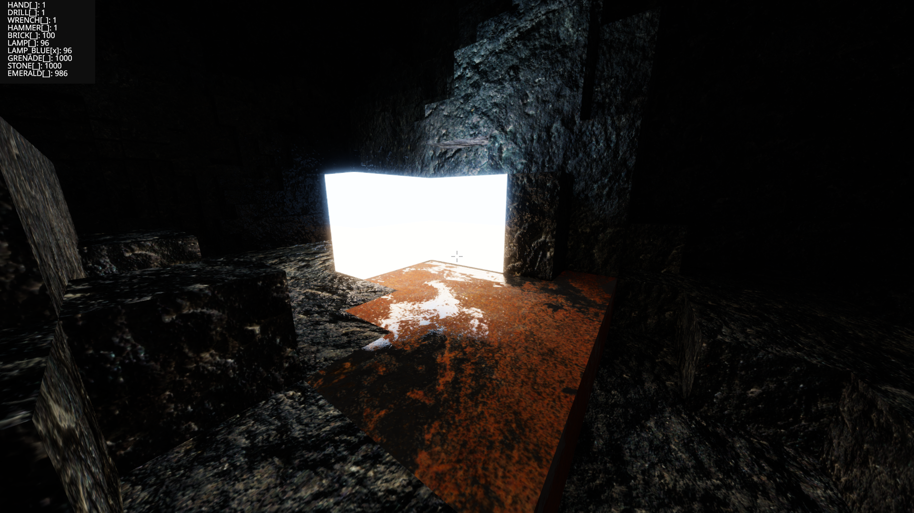
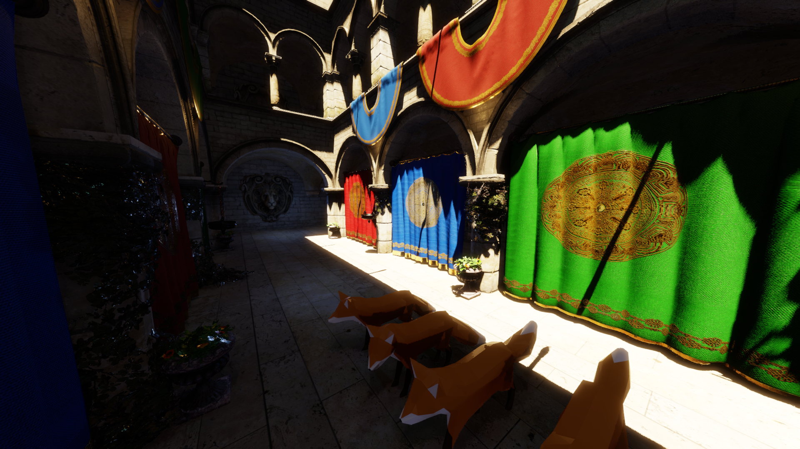
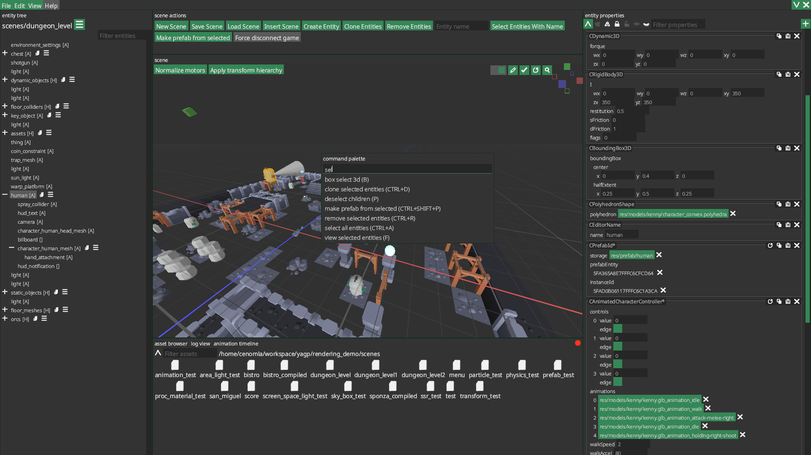

Oak Engine is a game engine I’ve been working on for around 8 years built completely from scratch. The runtime dependencies are restricted to SDL with some small C libraries for file decoding, compression, etc… My main goals for the engine are to learn as much as possible by diving deep into the underlying topics and knowledge required for implementing each feature, as well as to have a production ready application for indie game development and game jams. Checkout some of the games I’ve made with Oak Engine.
Features
Cross-platform runtime with support for Linux, Android and Windows, editor support for Linux and Windows
Fiber job system scheduled with a multithreaded event loop
Custom thread safe arena based memory allocation
Module/plugin system with an extensible application architecture and main loop
Written in C style C++, does not depend on the C++ standard library runtime
Runs exception free with ASan and UBSan enabled
Resource manager with async asset loading, auto hot reloading in debug builds
Robust input handling with controller support
Simple audio mixer with support for volume/pitch fading, multiple output formats
Custom implementation of a reliable ordered network protocol over UDP, inspired by Valve’s game network sockets
Reliable cross-platform hot code and asset reloading for both the game and editor
Runtime data model with support for multiple serialization formats and automatic symmetric diffing
Simple entity component system that features
Runtime defined components
Prefabs
Comprehensive serialization, custom serialization callbacks based on the data type or annotation
Many built in components for interfacing with all engine systems
Out of process editor
Global/per-project plugin support
UI built in a custom GUI framework
Supports scene introspection within running instances of game projects over the network
2D and 3D level editor
Asset editor
Texture tools
Deep data driven undo/redo
Live edits of the game’s active scene when connected to editor
Tile system with support for multiple grid types and advanced auto-tiling
Navigation engine with A* path finding, path smoothing, robust nav-mesh generation from the level geometry
Physically based rendering engine with a custom high-level graphics API using vulkan as the backend
Clustered deferred lighting
Micro-facet surface model
Energy conserving area lights
Image based lighting
Directional cascaded shadow mapping
Local light shadows
GPU driven renderer using only a few multi draw indirect calls
Voxel based dynamic diffuse global illumination
Screen space ambient occlusion based on the GTAO algorithm
Screen space reflections with rough reflections using screen space cone tracing
Normal mapping
Screen space contact shadows
Compute bloom
Weighted-blended order independent transparency
Compute particle system, n-body simulation
Tone-mapping and gamma correction
Complete 2D support even for advanced lighting and post-processing
Batches draw calls per material and render layer
3D rigid body physics engine
Collision, constraints and dynamics formulated using PGA (plane-based geometric algebra)
Iterative Gauss Seidel constraint solver
Island solver
Multiple constraint types
Timeline animation system
Skeletal animation, motor (dual-quaternion) skinning
Import animation timelines from gltf files
Timeline editor
Animate component properties
Animation nodes can parent entity transforms
2D rigid body physics engine
Iterative Gauss Seidel constraint solver
Warm starting
Collision events so that gameplay code can hook into every aspect of the contact solver
Builtin debug tools
CPU/GPU frame profiler
Audio mixer visual debugger
Memory debugger widget
Physics step debugger
Texture viewer
Animation debugger
Network stats
Graphics Showcase
Screenshots



Old showcase video (6 years old)
The Only Survivor Miraculously had no Internet
My game jam entry for the Global Game Jam 2023. It’s a logic based hacking puzzle game with art by dystoth.
Restore Vulcan
Restore Vulcan is a game I made in my engine with some friends during the Global Game Jam in 2020, a windows demo is available on itch.
An early prototype arcade style twin-stick shooter I work on from time to time. It’s a 2d game with 3d ray-marched lighting and some other fun graphical effects.
Skin walkers decent
A horror game made for the 2024 Alberta Game Jam. It’s the first 3d jam game made in Oak Engine. The project page is available on itch.